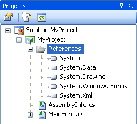

This opens the Project Explorer.


Alternatively you can select Add Mono Reference from the Project menu.

This opens the Add Mono Reference dialog box.

From the dialog box you can add a reference to an assembly in Mono's GAC, a project reference, or you can add a reference by browsing to an assembly on the file system.